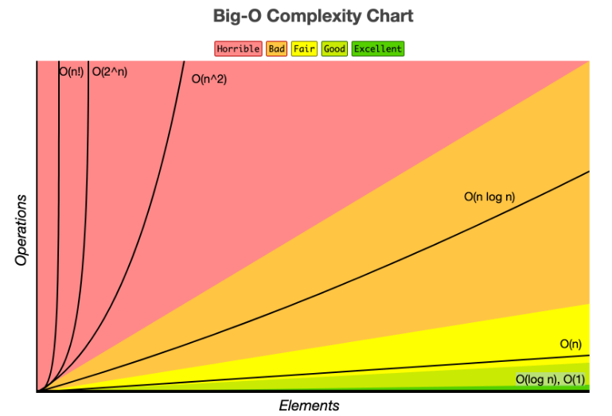
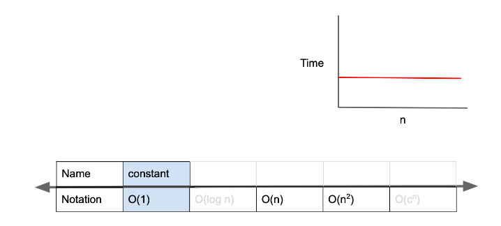
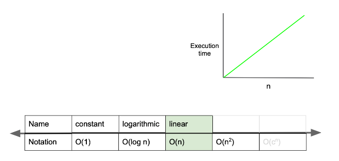
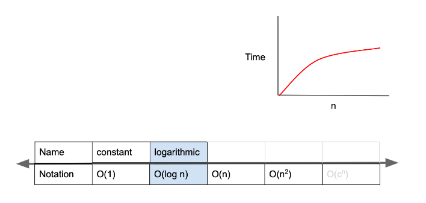
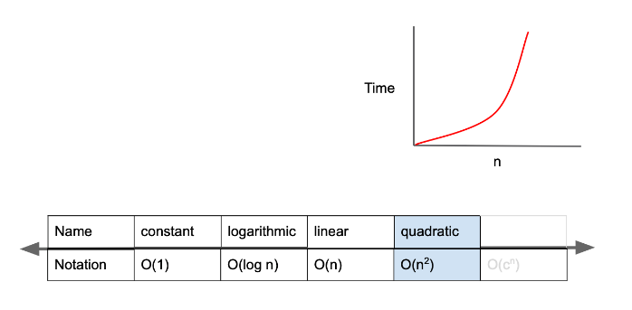
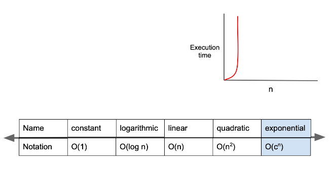

알고리즘이란 문제를 해결하기 위해 정해진 절차나 방법을 공식화한 형태로 표현한 것
시간 복잡도란 입력값의 변화에 따라 연산을 실행할 때 문제를 해결하는데 걸리는 시간관계를 뜻한다.
시간 복잡도를 표기하는 방법으로는 Big-O(빅-오), Big-Ω(빅-오메가), Big-θ(빅-세타) 가 있다.
각각 최악, 최선, 중간(평균)의 경우에 대하여 나타내는 방법이다.
Big-O 표기법은 최악의 경우를 고려하므로 프로그램이 실행되는 과정에서 소요되는 최악의 시간까지 고려할 수 있기 때문에 시간 복잡도를 표기하는 방법 중 하나로 가장 자주 사용 된다.

O(1)는 constant complexity라고 하며 입력값이 증가하더라도 시간이 늘어나지 않는다.
즉, 입력값의 크기와 관계없이 즉시 출력값을 얻어낼 수 있다.

function O_1_algorithm(arr, index){
return arr[index];
}
let arr = [1, 2, 3, 4, 5];
let index = 1;
let result = O_1_algorithm(arr, index); // expected output : 2
O(n)은 linear complexity라고 하며 입력값이 증가함에 따라 시간 또한 같은 비율로 증가한다.

function O_n_algorithm(n){
for(let i = 0; i < n; i++){
// do something for 1 second
}
}
O(log n)은 logarithmic complexity라고 하며 Big-O표기법중 O(1) 다음으로 빠른 시간 복잡도이다.
입력값을 제시함에 따라 경우의 수가 절반으로 줄어 시간도 줄어든다.

O(log n)의 예시로 up & down 게임을 예로 들수있다.
1. 1~100 중 하나의 숫자를 플레이어1이 고른다. (30을 골랐다고 가정)
2. 50(가운데)을 제시하면 50보다 작으므로 down을 외친다.
3. 1~50중의 하나의 숫자이므로 또다시 경우의 수를 절반으로 줄이기 위해 25를 제시한다.
4. 25보다 크므로 up을 외친다.
5. 경우의 수를 계속 절반으로 줄여나가며 정답을 찾는다.
O(n^2)은 quadratic complexity라고 하며 입력값이 증가함에 따라 시간이 n의 제곱수의 비율로 증가한다.

function O_quadratic_algorithm(n) {
for (let i = 0; i < n; i++) {
for (let j = 0; j < n; j++) {
// do something for 1 second
}
}
}
O(2^n)은 exponential complexity라고 하며 Big-O 표기법 중 가장 느린 시간 복잡도이다.

function fibonacci(n) {
if (n <= 1) {
return 1;
}
return fibonacci(n - 1) + fibonacci(n - 2);
}
탐욕 알고리즘은 선택의 순간마다 당장 눈앞에 보이는 최적의 상황만을 쫓아 최종적인 해답에 도달하는 방법이다.
탐욕 알고리즘으로 문제를 해결하는 방법은 다음과 같이 단계적으로 구분할 수 있다.
1. 선택 절차(Selection Procedure): 현재 상태에서의 최적의 해답을 선택한다.
2. 적절성 검사(Feasibility Check): 선택된 해가 문제의 조건을 만족하는지 검사한다.
3. 해답 검사(Solution Check): 원래의 문제가 해결되었는지 검사하고 해결되지 않았다면 선택 절차로 돌아가 위의 과정을 반복한다.
탐욕 알고리즘을 적용하려면 해결하려는 문제가 다음의 2가지 조건을 성립해야 한다.
1. 탐욕적 선택 속성(Greedy Choice Property) : 앞의 선택이 이후의 선택에 영향을 주지 않아야 한다.
2. 최적 부분 구조(Optimal Substructure) : 문제에 대한 최종 해결 방법은 부분 문제에 대한 최적 문제 해결 방법으로 구성되어야 한다.
모든 문제는 완전 탐색으로 풀 수 있으며 이 방법은 굉장히 단순하고 무식하지만 답이 무조건 있다라는 장점이 있다.
그렇지만 문제 해결을 할 때엔 기본적으로 두 가지 규칙이 붙는다.
1. 문제를 해결할 수 있는가?
2. 효율적으로 동작하는가?
완전 탐색은 첫 번째 규칙을 만족시킬 수 있는 강력한 무기이지만 두 번째 규칙은 만족할 수 없는 경우가 있다.
문제에서 요구하는 복잡한 구현 요구 사항을 하나도 빠뜨리지 않고 코드로 옮겨 마치 시뮬레이션을 하는 것과 같은 방식